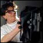

|
Margaret
Stratton's work in photography and video ranges from formal
black-and-white landscapes to autobiographical first-person narratives.
Her work often focuses on a critique of film and television, and
on the stereotyping of women and people of color in entertainment.
Her website is www.margaretstratton.com.
Leslie Roberts is a Fulbright Fellow at Gateway Antarctica, a Centre for
Antarctic Studies and Research at the University of Canterbury in New Zealand. She is working on a book and documentary, both titled "Amundsen's Knife." She has an MFA from the University of Iowa's Nonfiction Writing Program
|